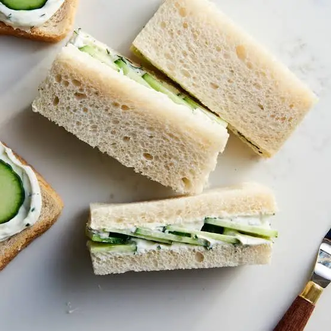

Cucumber Sandwich

Ingredient
- 12 ounces full-fat cream cheese
- 1 (about 1-pound) English cucumber
- 1 small handful fresh dill
- 1 small handful fresh chives
- 3 tablespoons mayonnaise
- 1 teaspoon kosher salt, divided
- 1/4 teaspoon fresh ground black pepper
- 1 loaf sliced white sandwich bread
Steps
- Place 12 ounces cream cheese in a medium bowl and let sit at room temperature until softened, 1 hour. Meanwhile, using a mandoline or very sharp knife, trim and very thinly slice 1 large English cucumber crosswise (1/8-inch thick). Place in a large fine-mesh strainer set over a bowl. Sprinkle with 1/2 teaspoon of the kosher salt and toss to combine. Let the cucumbers rest and drain, tossing occasionally, 30 minutes to 1 hour.
- Mince 1 small handful fresh dill until you have 1 1/2 tablespoons. Mince 1 small handful fresh chives until you have 1 1/2 tablespoons. Add the dill and chives to the cream cheese. Add 3 tablespoons mayonnaise, the remaining 1/2 teaspoon kosher salt, and 1/4 teaspoon black pepper. Stir and fold until evenly combined.
- Using an offset spatula, evenly spread 1 1/2 tablespoons of the cream cheese mixture into a square on one slice of the bread, leaving a 1/2-inch border. Shingle 15 slices of the cucumbers on top. Close the sandwich with a second slice of bread.
- Repeat assembling until you have 7 whole sandwiches. Using a serrated knife, cut the crusts off all the sandwiches (these are for snacking!). From here, you can choose to cut each sandwich in half into rectangles or triangles, or quarter each sandwich to form smaller squares or triangles. Stack on a serving platter or cake stand.
Go Back